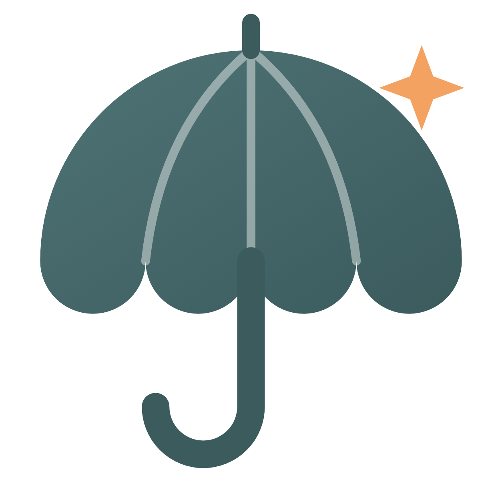

Lagi ramai-ramainya…
internet mati.

Payoung
Kasir yang tetap jalan, walau offline.
01
Kasir
tetap jalan
tanpa internet
Stok & laporan
jalan sendiri
Struk langsung ke
WhatsApp
Payoung POS
Luring
Tersinkron
Kopi Susu
2 x Rp 18.000
Rp 36.000
Roti Bakar
1 x Rp 15.000
Rp 15.000
Air Mineral
1 x Rp 5.000
Rp 5.000
Total
Rp 56.000
Bayar
Pembayaran berhasil
Rp 56.000
Tersimpan di perangkat. Terkirim otomatis begitu internet kembali.
Ringkasan hari ini
Omzet hari ini
Rp 0
Susu UHT | sisa 3
Stok menipis
Jurnal otomatis
Seimbang
Laba rugi
Siap dilihat
B
Bu Sari
Struk | Kedai Senja
2 Kopi Susu
36.000
1 Roti Bakar
15.000
1 Air Mineral
5.000
Total
Rp 56.000
19.42
Makasih, ya!
Satu aplikasi buat
usahamu
Warung
Kafe
Toko
Salon
Laundry
Apotek
Bengkel
Grosir
Dari satu kasir sampai banyak outlet.

Payoung
Smart Choice Your Business Partner
Coba gratis
payoung.id
Follow untuk tips jualan
Putar dengan suara
Ulang